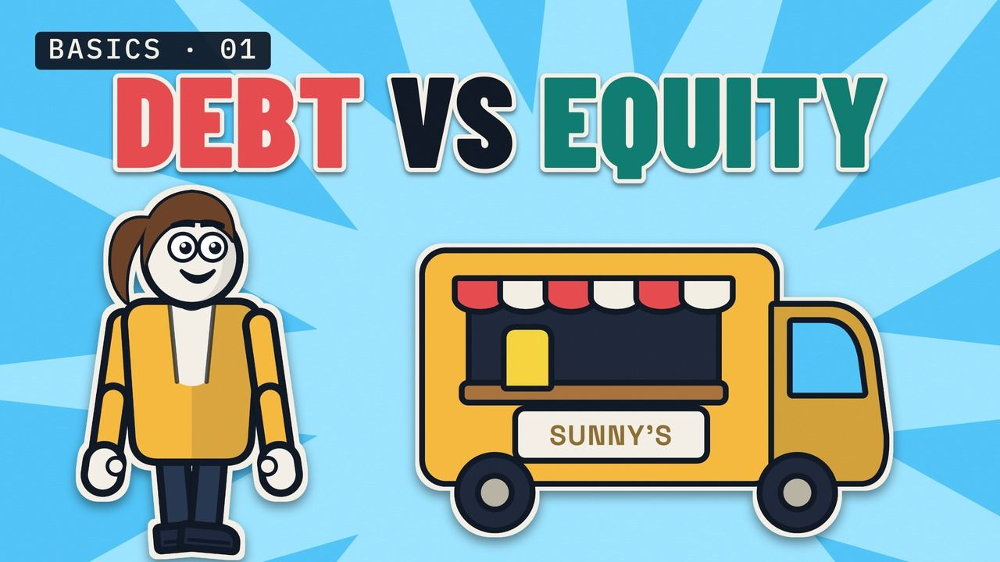
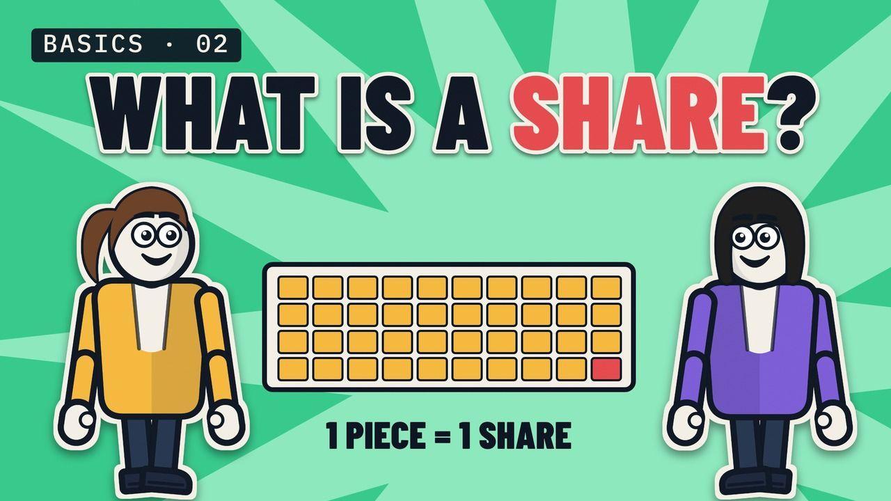
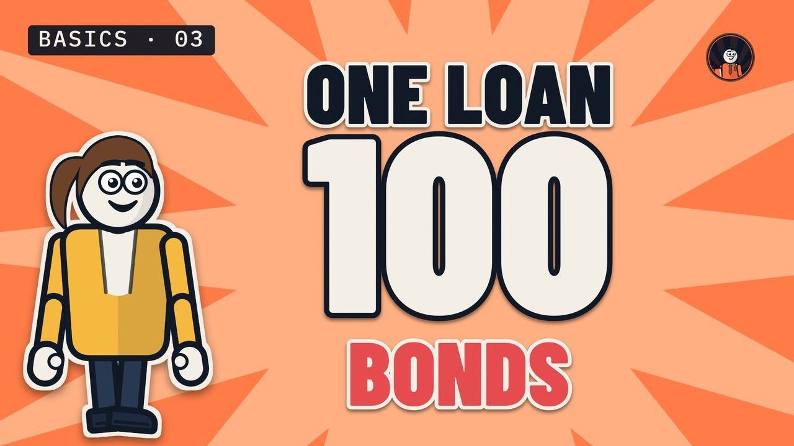
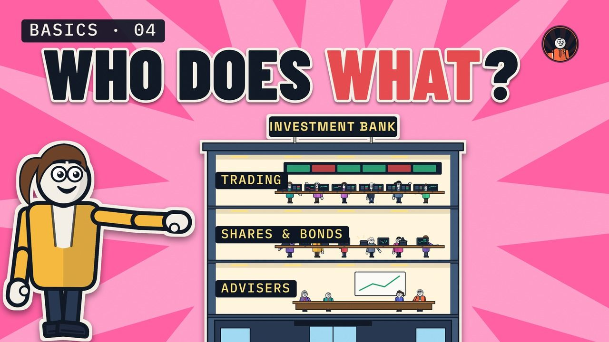
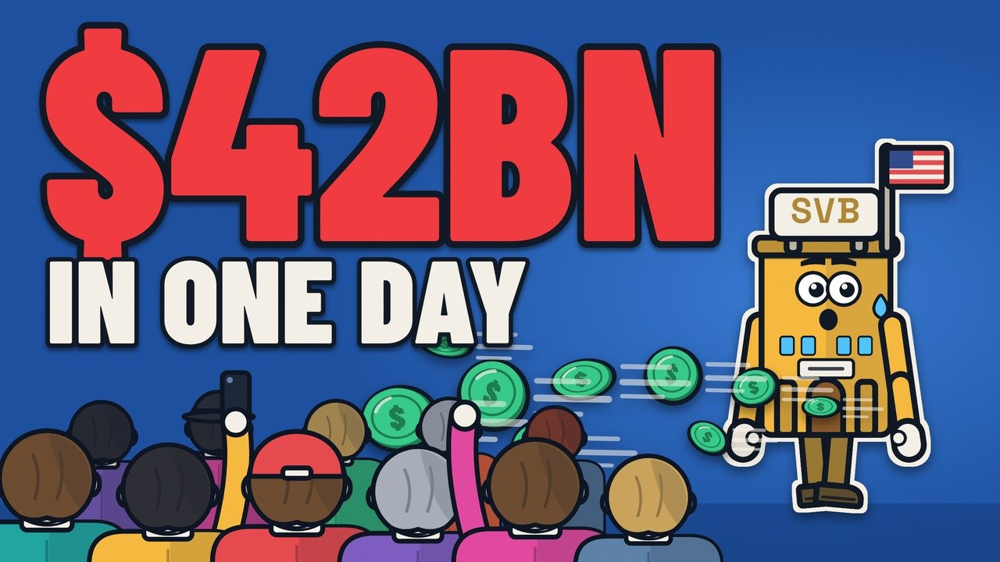
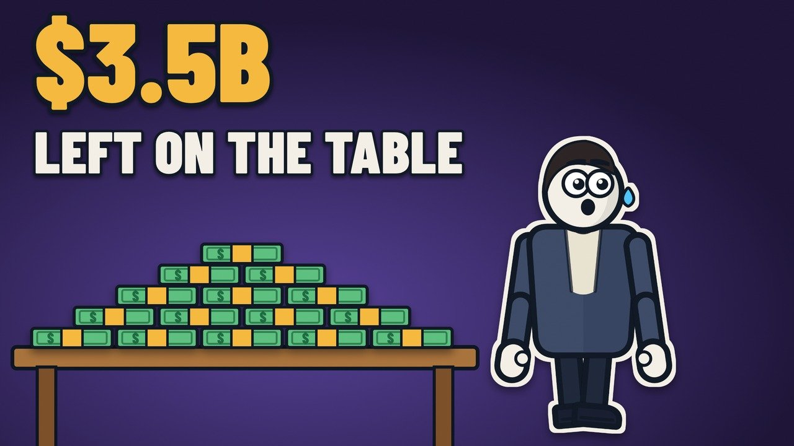
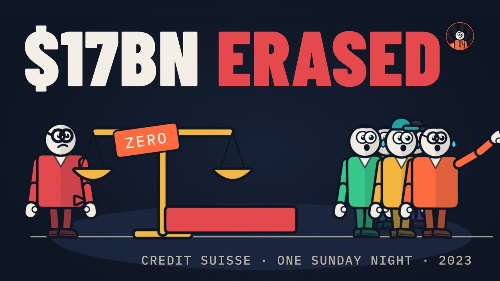
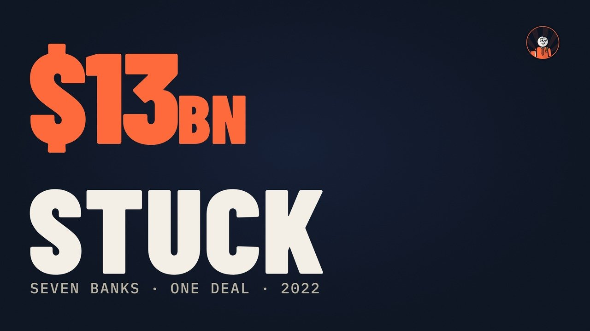

Investment and corporate banking, explained from zero
Everything you need to know about investment and corporate banking.
Bookrunner TV: short lessons on debt, shares, bonds and IPOs, explained from zero, and the biggest deals taken apart from the public record: who paid, who lent, who carried the risk and what it cost.
Start here: Finance From Zero
All lessons →
Lesson 1
Debt vs equity, explained with a lemonade stand
Borrow $10,000 from a bank, or give a partner 40%? What each one really costs, in a good year and a bad one.

Lesson 2
What is a share? Stocks explained with a lemonade stand
Sunny cuts her business into 100 equal pieces. What a share gives you, and who decides what it's worth.

Lesson 3
What is a bond? Loans and bonds, explained with a lemonade stand
One big loan, cut into 100 bonds. What you get when you buy one, and how a bond differs from a share.

Lesson 4
What does an investment bank actually do? Explained with a lemonade stand
Sunny sells $1 million of new shares. Who does what inside the bank: advisers, the bookrunner and its book, the trading floor.
The word in our name
What is a bookrunner?
The bank that runs the order book and prices the deal. What the job is, how bookbuilding works, and four real deals where it mattered.
Big Deals, Explained
All deals →
Episode 04
Silicon Valley Bank: the $2.25 billion share sale that started a run
Silicon Valley Bank looked fine on paper. About 42 hours after it announced a $2.25 billion share sale, regulators shut it down. How announcing a fix can start a bank run, and who came out ahead.

Episode 03
Figma IPO: $3.5 billion left on the table, by Bloomberg's count
The banks priced Figma's IPO at $33 a share on 30 July 2025, and the next day it closed at $115.50, up 250%. Who left more than $3.5 billion on the table, by Bloomberg's count, why the bookrunners priced it there, and what happened next.

Episode 02
Credit Suisse: how $17 billion of bonds were wiped out in one weekend
On Sunday 19 March 2023, Credit Suisse's AT1 bonds, about 16 billion Swiss francs, were written down to zero while shareholders still got 3 billion francs. How AT1s work, what happened that weekend and what the courts said.

Episode 01
How Elon Musk's $44 billion Twitter deal was actually financed
Seven banks committed $13 billion so Elon Musk could buy Twitter. The four debt tranches, who committed what, why the banks were stuck with the loans for 30 months, and what it really cost them.